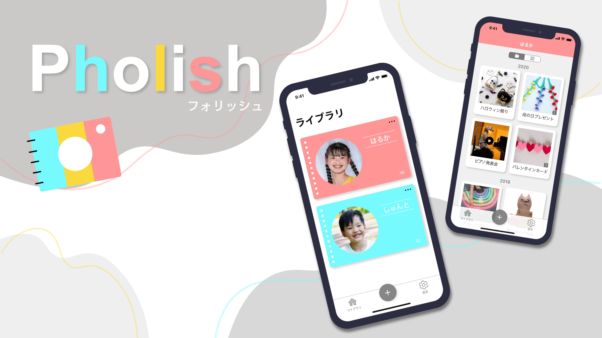
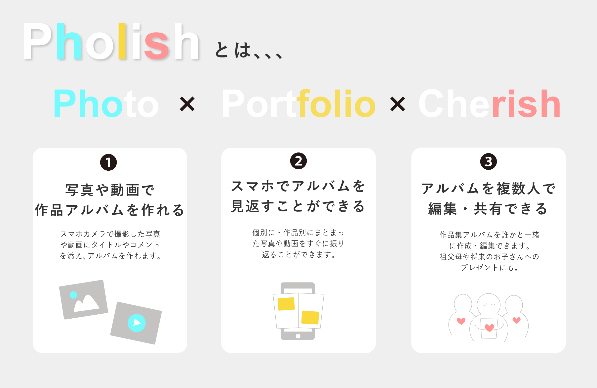
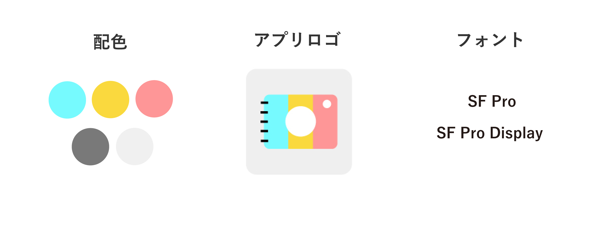
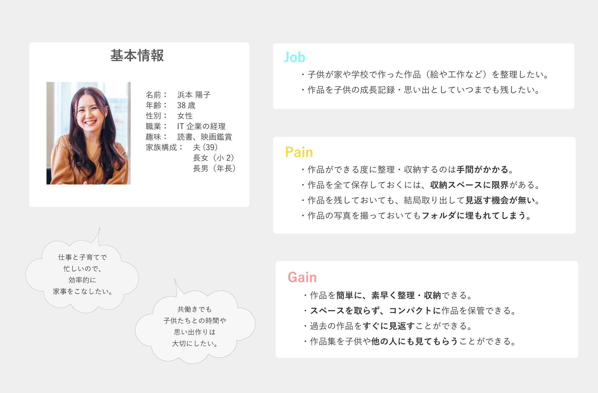
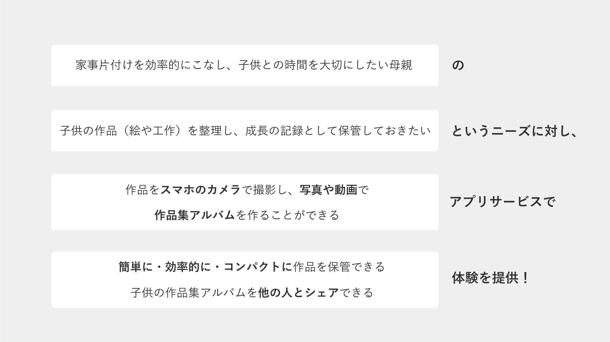
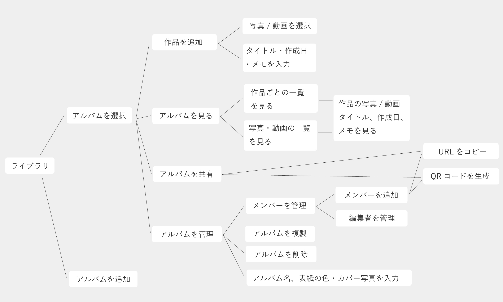
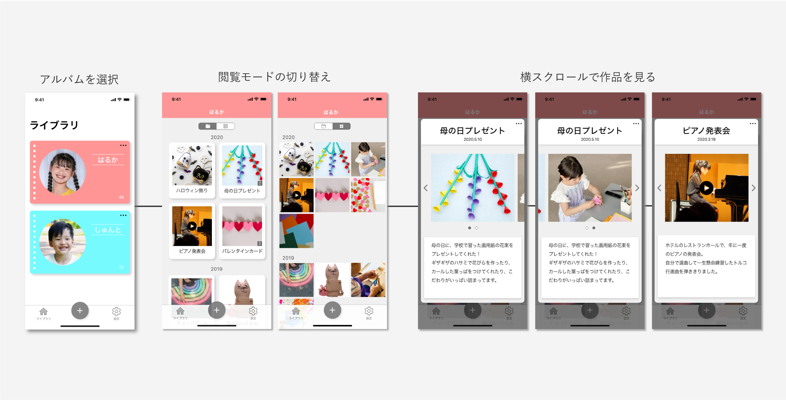

【UI】スマホで作品集アルバムを作れるアプリ
Overview
Pholishは、「学校や家で子供が作った作品を大切に残しておきたい。でも、 "整理が大変" "スペースがない" "残しておいても見返す機会がない"」 というお悩みを解決するアプリです。
Information
- 制作種別・・・
- 自主制作
- 制作期間・・・
- 150h
- 使用ソフト・・・
- XD（UIデザイン）
Illustrator（レイアウト）
サービスづくりの背景
- 私自身小さな頃からものづくりが好きで、久しぶりに幼少期の作品を見返して懐かしかったこと
- 3人兄弟の母が以前、作品保管スペースがないこと、収納しきれず処分しなければいけないのを悩んでいたのを思い出したこと
から、サービス発案に至りました。
サービス・コンセプト内容
デザインの背景
配色
- 色の三原色＋白で「どんな作品でも大切に残し、アルバムや思い出を彩っていく」という意味を込めました。
- 家族中心に使うサービスであるため、優しく落ち着いた色合いにしました。
アプリロゴ
- カメラとアルバムのモチーフで、主なサービス内容を表現しました。
- 「簡単に・気軽にアルバムを作れる」ことを示すため、丸みのある優しいデザインにしました。
フォント
- 親がアルバムを作成し、その後祖父母や将来の子供などに共有されていくことを踏まえ、幅広い世代が慣れ親しむiOSのシステムフォントを選びました。
ペルソナ
解決策
プロトタイプ
UIフロー
アルバムを見る
- 各アルバムの色を目立たせるため、アイコンや文字、背景はグレーにすることで、統一感を持たせました。
- ユーザーの目的・場合に対応するため、作品の閲覧方法を3パターンに分けました。
- アルバムのページをめくっていくような体験を再現するため、「横スクロール」で作品を見られるように設計しました。